$\renewcommand{\Diff}{\mathcal{D}}\newcommand{\dist}{\mathrm{dist}}\renewcommand{\Imm}{\mathcal{I}}\newcommand{\Shape}{\mathcal{S}}\newcommand{\R}{\mathbb{R}}\newcommand{\vol}{\operatorname{vol}}\newcommand{\Vol}{\mathrm{Vol}}\newcommand{\Var}{V}$
<h4>Parameterization Invariant Feature<br> Vectors For Shape Learning on Surface Data</h4><hr> <p> <b>Emmanuel Hartman$^1$</b>, Emery Pierson$^2$, Martin Bauer$^3$, Nicolas Charon$^1$<br> Zan Ahmad$^4$, Yashil Sukurdeep$^4$, Shiyi Chen$^4$, Minglang Yin$^5$ <br> <br>$^1$Department of Mathematics, University of Houston<br> $^2$ LIX, Ecole Polytechnique, France<br> $^3$Department of Mathematics, Florida State University<br> $^4$Department of Applied Mathematics, Johns Hopkins University<br> $^5$Department of Biomedical Engineering, Johns Hopkins University<br></p><hr><p> 14 April 2025 </p> <div class="row"> <div class="col-md-6" align="left" markdown="1"> <img src="figs/nsf.png" width="20%" /> </div> </div>
<h4 align="left">Parameterization Invariant Feature Vectors for Surface Data</h4><hr> <div class="row" align="left"> <div class="col-md-8" align="left" markdown="1"> <p>Fix a 2-manifold $M$. Consider the space of parameterized objects $\Imm = \operatorname{Imm}(M,\R^3)$ acted on by a group of reparameterizations $\Diff= \operatorname{Diff}(M)$. <br>The goal of shape learning is to approximate a function $f:\Imm \to \mathcal{Y}$ which is <b>invariant</b> to the action of $\Diff$. i.e. $$\text{for any } q\in\Imm \text{ and } \gamma\in\Diff, \quad f(q)=f(q\circ\gamma).$$</p> <br><br> <p class="fragment fade-left">To ensure our approximations of $f$ have the desired invariance, we will construct $E:\Imm\to \mathcal{L} = \R^m$ so that $E$ is invariant to $\Diff$.<br><br>Then, we learn a function $g:\mathcal{L}\to \mathcal{Y}$ such that $$g\circ E \approx f.$$</p> </div> <div class="col-md-4" align="center" markdown="1"> <p>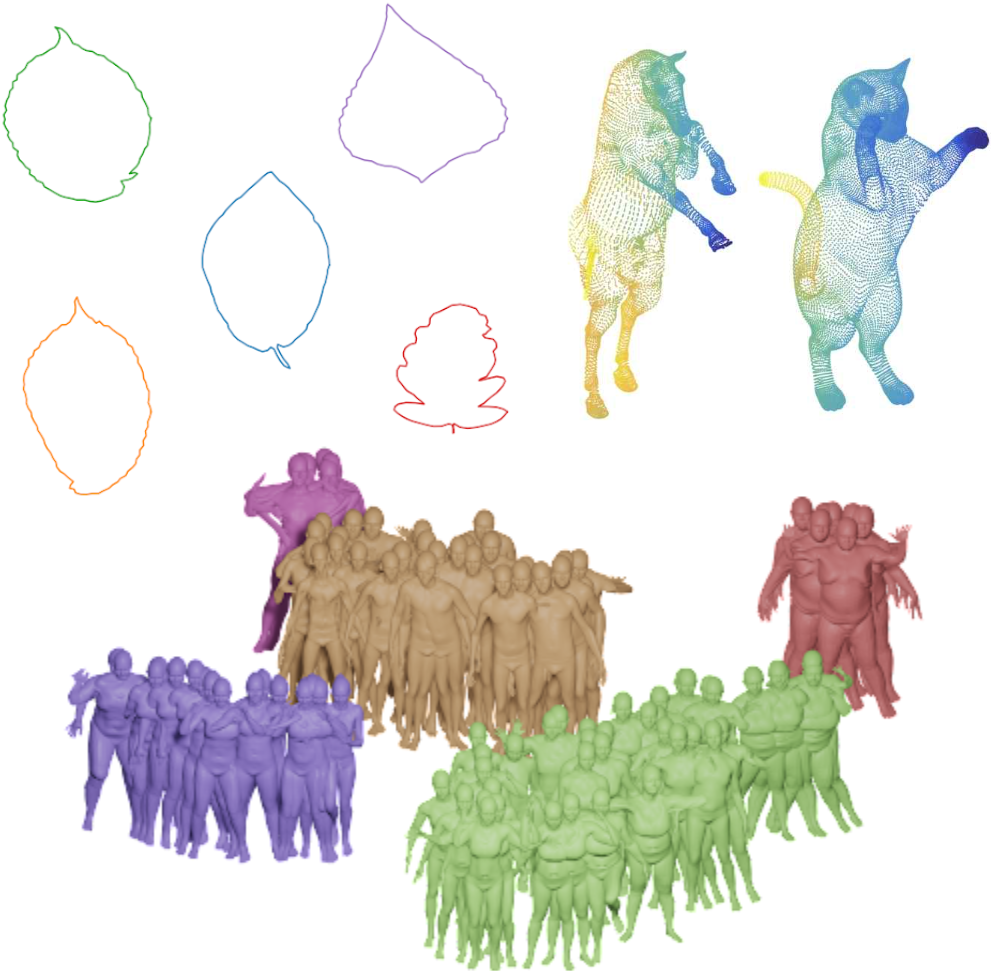</p> <p>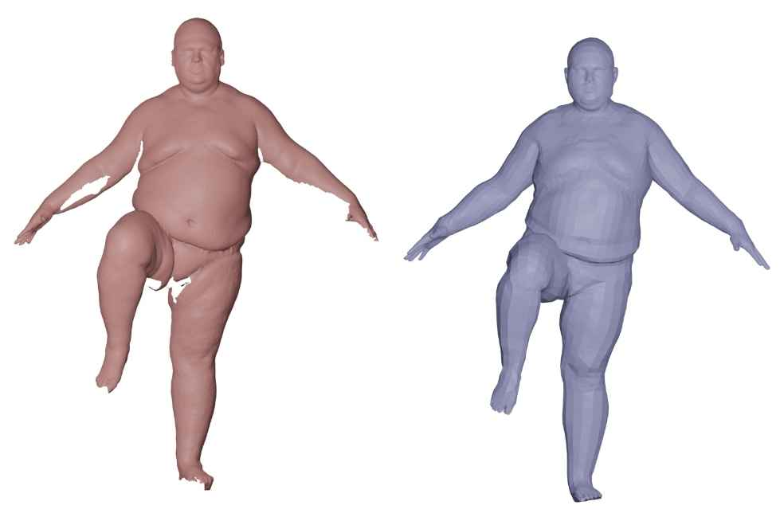</p> </div> </div>
<h4 align="left">Representations from Geometric Measure Theory$^{1,2,3,4}$</h4><hr> <div class="row"> <div class="col-md-8" markdown="1" align="left"> <p>For any $q\in \Imm$ we can associate a varifold $\mu_q\in\mathcal{M}(\mathbb R^3\times S^{2})$ as the push forward measure $\mu_q:= (q,n_q)_*\operatorname{vol}_q$ where $n_q$ is the Gauss of $q$.<br> Thus, for a test function $\omega\in C_1(\R^3\times S^2, \R)$, $$\mu_q(\omega) = \int_M \omega(q,n_q) \operatorname{d} \operatorname{vol}_q .$$ By a change of variables, for any $\gamma\in\Diff$, $\mu_{q\circ\gamma} = \mu_q$.</p><br> <p class="fragment" data-fragment-index="1"><br>To represent a varifold with a fixed finite dimension requires solving a quantization problem. Thus, we cannot directly use the varifold representations.</p><br> <p class="fragment" data-fragment-index="1"><br>We may equip $\mathcal{M}(\mathbb R^3\times S^{2})$ with an RKHS norm $\|\cdot\|_V$.</p> </div> <div class="col-md-4" markdown="1" align="right"><p>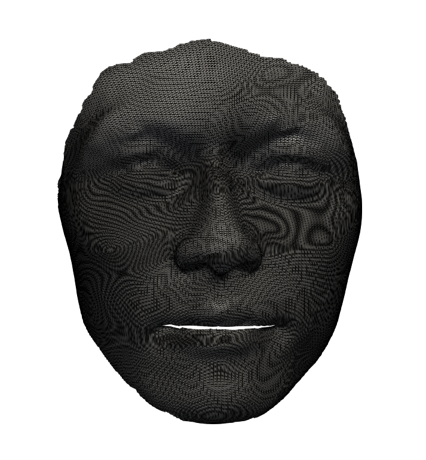</p><p>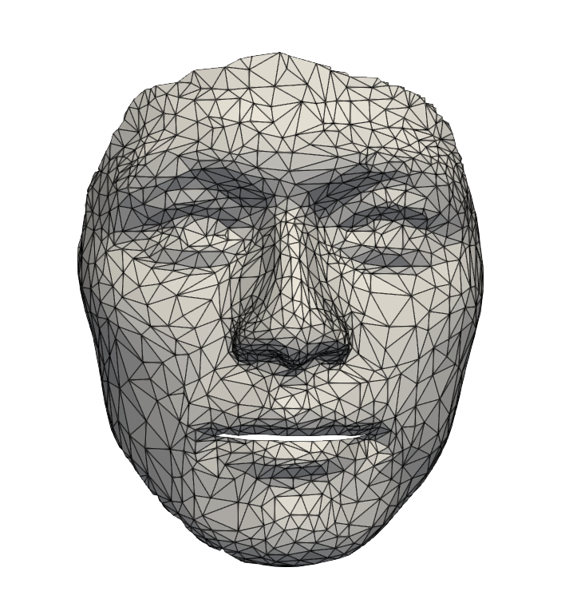</p><hr><p>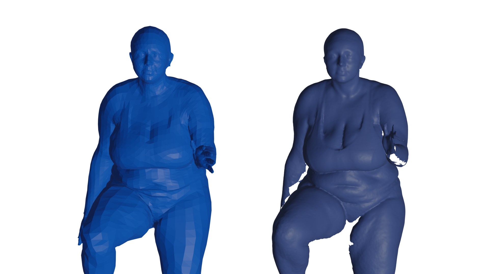</p></div> <p align="left"><sub>$^1$Charon & Trouvé. "The varifold representation of nonoriented shapes for diffeomorphic registration."</sub><br> <sub>$^2$Kaltenmark, et al. "A general framework for curve and surface comparison and registration with oriented varifolds."</sub><br> <sub>$^3$Feydy et al. "Optimal transport for diffeomorphic registration"</sub><br> <sub>$^4$ Roussillon & Glaunès. "Representation of surfaces with normal cycles and application to surface registration."</sub><br></p> </div>
<h4 align="left">Approach 1: Varifold Gradient For Representing Shapes</h4><hr> <div class="row" align = "left"> <p>Consider a template $\mathcal{T}\in \Imm$ discretized by a triangular mesh with $M$ vertices and define the following operator: </p> <div class="col-md-12" markdown="1" align="center"> <p>$$\begin{align}\operatorname{VariGrad}:\Imm&\to\R^{3M}\\ q&\mapsto \nabla_{\vec{0}}\|\mu_q - \mu_{\mathcal{T} + (\cdot)}\|_V^2 = C - 2 \nabla_{\vec{0}}\langle\mu_q , \mu_{\mathcal{T}+(\cdot)}\rangle_V\end{align}$$<br></p> <div> <div class="col-md-6" markdown="1" align="left"> <p class="fragment fade-left">+ $q$ can represented by a mesh with any number of vertices and any mesh structure and $\operatorname{VariGrad}(q)$ will have dimension $\R^{3M}$. <br><br></p> <p class="fragment fade-left">+ $\operatorname{VariGrad}(q)$ gives a first order approximation of how to deform $\mathcal{T}$ into the same shape as $q$. <br><br></p> <p class="fragment fade-left">+ $\operatorname{VariGrad}(q)$ is invariant to parameterization and robust to imaging noise. <br><br></p> </div> <div class="col-md-6" markdown="1" align="center"><br><p>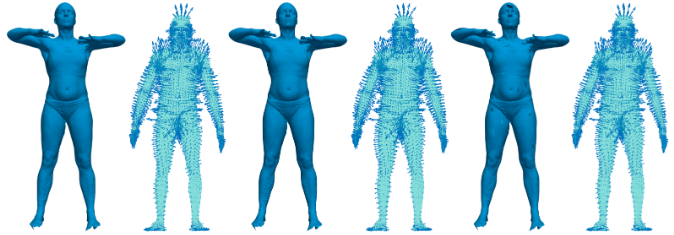</p></div> </div>
<h4 align="left">VariGrad for Surface Reconstruction</h4><hr> <div class="row"> <div class="col-md-12" markdown="1" align="left" style="line-height:50%;"> <p>Consider $\Imm_F \subset \Imm$ as the space of all surfaces represented by a mesh with a fixed mesh structure $F$. Our goal will be to learn $f:\Imm \to \Imm_F$ such that $f(q)$ is the same shape as $q$.</p><br><br> </div> <div class="col-md-8" markdown="1" align="left"> <p>We attempt to learn such a function the DFAUST[1] dataset which consists of ~40,000 scans. This dataset includes mesh representations of each of the scans with a fixed mesh structure $F$.</p><br><br> <p>We train the models with ~80% of the registered DFAUST to minimize the mean square error of the vertex positions.</p><br><br> <p>Despite being trained on registered data, the model can be applied to meshes with any number of vertices and any mesh structure.</p> </div> <div class="col-md-4" markdown="1" align="left"> <p>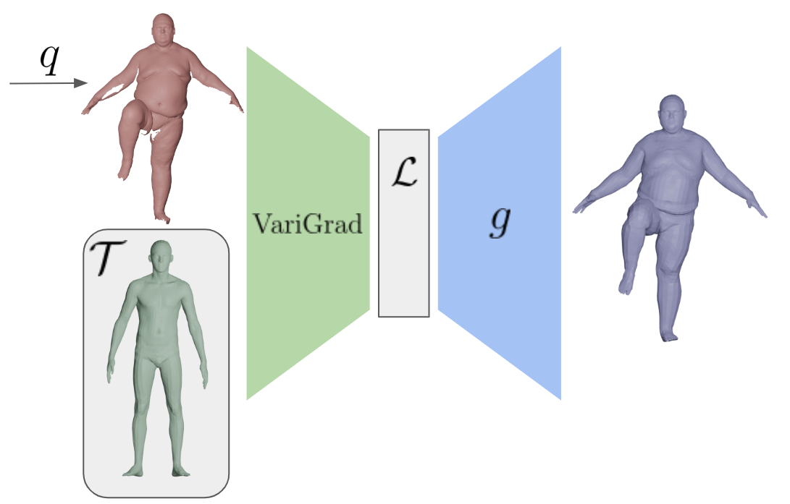</p><br><br> <p>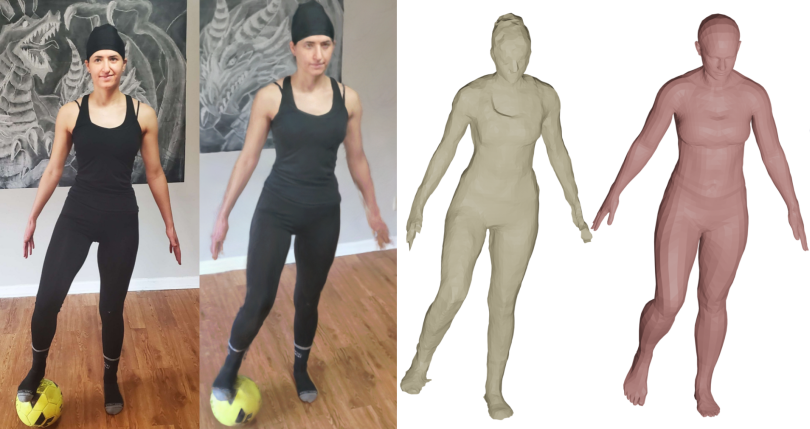</p> </div> </div> <p align="left"><sub>$^{1}$ Bogo, et al. "Dynamic FAUST: Registering Human Bodies in Motion"</sub><br>
<h4 align="left">VariGrad Results</h4><hr> <div class="row"> <div class="col-md-6" markdown="1" align="left"> <p>We test the model on the unseen testing set of registered data as well as an unseen testing set of unregistered scans of human bodies.</p> <span class="fragment fade-left"><p>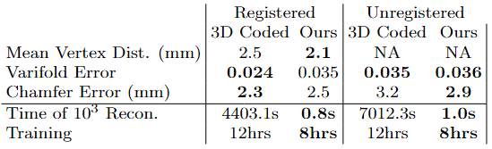</p></span> <span class="fragment fade-left"><p>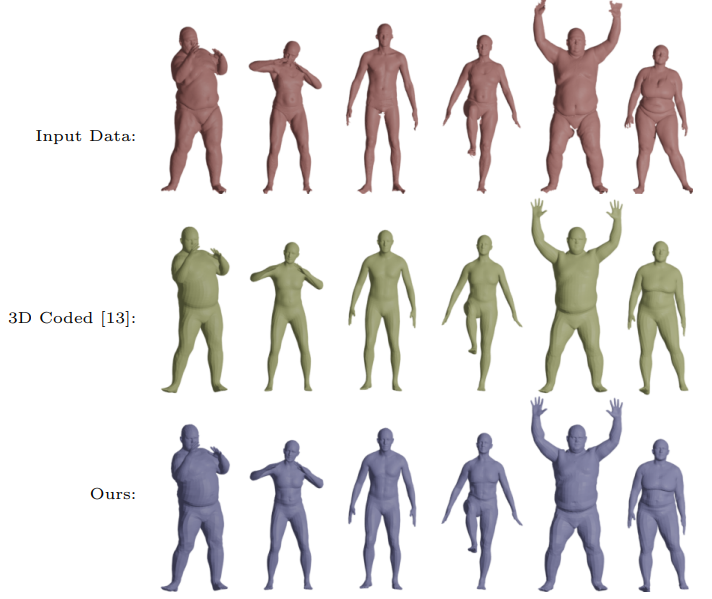</p></span></div> <div class="col-md-6" markdown="1" align="left"><span class="fragment fade-left"><p>As an additional test of generalizability of both models, we select 100 unseen surfaces and resample each surface 100 times. </p><p>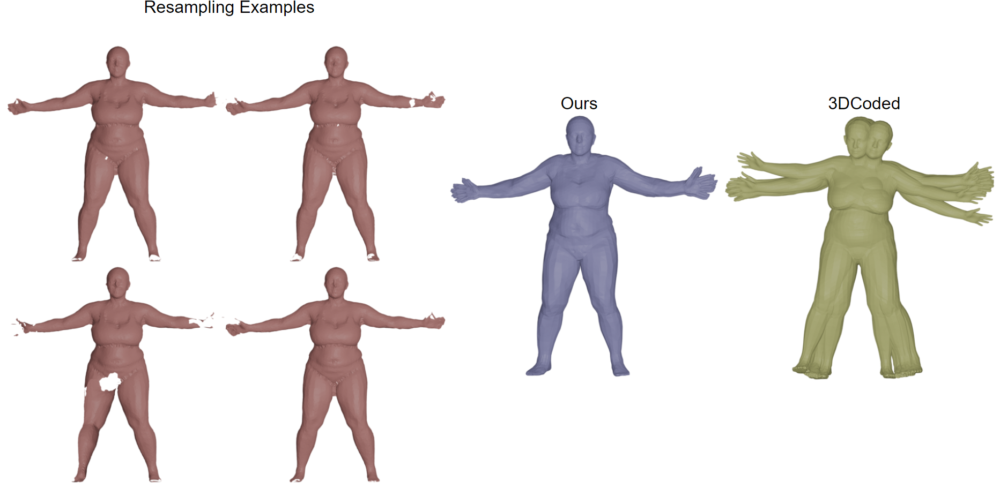</p><span class="fragment fade-left"><p>We test both the mean error on the whole dataset as well as the mean variance within each class.</p><p>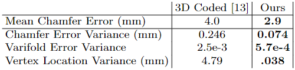</p></span></span><br></div> </div> <p align="left"><sub>$^{13}$Groueix, et al. "3D-CODED : 3D Correspondences by Deep Deformation."</sub><br>
<h4 align="left">VariGrad for Clustering</h4><hr> <div class="row" align ="left"> <p>We consider a dataset of 3D surfaces representing left atrial appendages (LAA) of a large cohort (n=1184) of patients. Several works have shown that morphological changes in the LAA are correlated to ischemic stroke[1,2].</p> <br><p>Previous works (i.e. [1]) have considered LAAs which are manually classified as one of four morphological types and shown there is significant difference in relative stroke rates of these clusters. </p> <div class="col-md-8" markdown="1" align="left"><br> <p>We will perform clustering and classification using the VariGrad representations of the data.</p> </div> <div class="col-md-4" markdown="1" align="center"> <br> <p>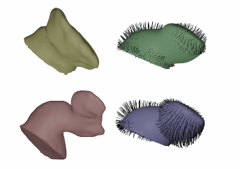</p> <br> </div> </div> <div class="row" align = "left"> <p align="left"><sub>$^1$ Biase et al. "Does the Left Atrial Appendage Morphology Correlate With the Risk of Stroke in Patients With Atrial Fibrillation?: Results From a Multicenter Study"<br></sub> <p align="left"><sub>$^2$ Ahmad et al. "Elastic shape analysis computations for clustering left atrial appendage geometries of atrial fibrillation patients"</sub> </div>
<h4 align="left">VariGrad for Clustering</h4><hr> <div class="row" align="left"> <p><b>Clustering:</b></p> <p>We perform hierarchical clustering of the VariGrads of the dataset and evaluate the relative stroke risk of each cluster.</p> <div class="col-md-4" markdown="1" align="left"> <div class="fragment fade-left"> <p>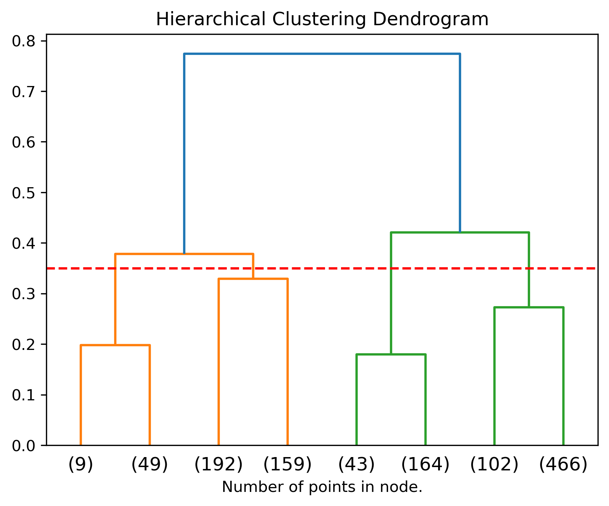</p> <p>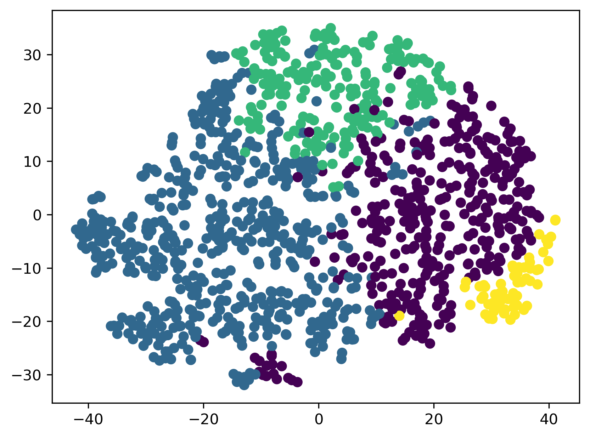</p> </div> </div> <div class="col-md-8" markdown="1" align="left"> <div class="fragment fade-left"> <p>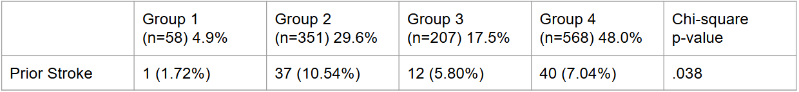</p><br><br> <p>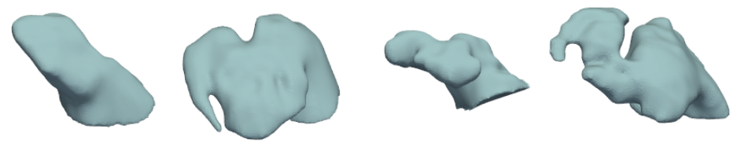</p> </div> </div> </div>
<h4 align="left">VariGrad for Classification</h4><hr> <div class="row" align="left"> <p><b>Classification:</b></p> <p>We use the VariGrads of the LAAs as inputs to a support vector machine classifier trained on ~80% of the data.</p><br><br> <div class="col-md-4" markdown="1" align="center"> <p>The SVM classifier produces an accuracy of $90.03\%$. <br><br> Additionally, we can visualize the disciminant direction of the SVM model as a vector field on the template. This vector field can be interpreted as the type of deformation that leads to higher risk of ischemic stroke. </p> </div> <div class="col-md-8" markdown="1" align="center"> <div class="col-md-6" markdown="1" align="center"> <div class="fragment fade-left"> </div> </div> <div class="col-md-6" markdown="1" align="center"> <div class="fragment fade-left"> <p>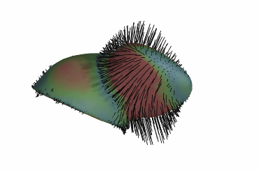</p> </div> </div> </div> </div> </div>
<h4 align="left">Approach 2 : Learned Test Functions</h4><hr> <div class="row" align="left"> <p>Another approach to using varifold representations of surfaces for machine learning is to learn a set of test functions $\{\omega_i\}_{i=1}^m\subseteq C_1(\R^3\times S^2,\R)$ and consider the evaluation of the functions by the varifolds associated with the data.</p><br><br> <div class="col-md-7" markdown="1" align="left"> <p>In particular, we may define a map $E:\mathcal{I} \to \mathcal{L}=\R^m$ where $$E(q)_i = \int_M \omega_i(q, n_q) \operatorname{d vol}_q.$$</p> <p>We will model $\{\omega_i\}_{i=1}^m$ by a simple multilayer perceptron with 2 hidden layers from $\R^6$ to $\R^m$. </p><br><br> <p>For today, we will consider this model for classification tasks where $m$ is the number of classes and $E(q)_i$ represents the likelihood that $q$ is in the $i$-th class.</p> </div> <div class="col-md-3" markdown="1" align="right"> <p>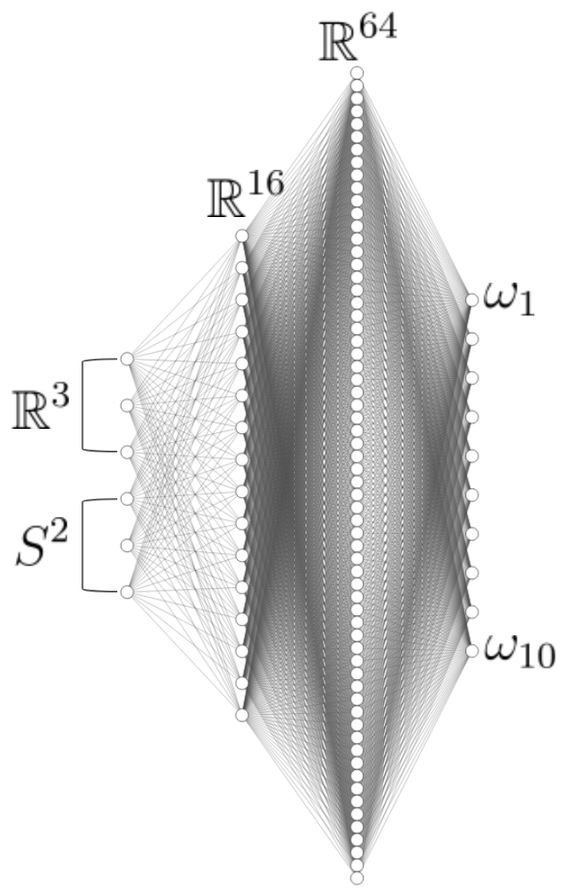</p> </div> </div>
<h4 align="left">Learned Test Functions Results - MNIST Digits As Surfaces</h4><hr> <div class="row" align="left"> <div class="col-md-3" markdown="1" align="right"> <p>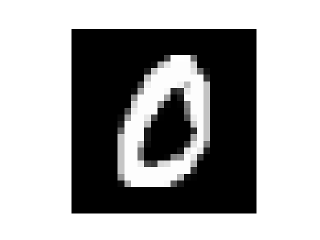</p> <div class="threejs-container" data-ply="https://emmanuel-hartman.github.io/Talks/plys/0_12.ply"></div> </div> <div class="col-md-3" markdown="1" align="right"> <p>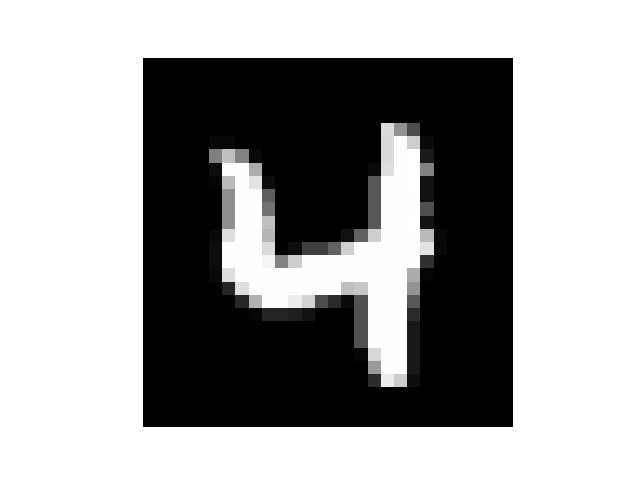</p> <div class="threejs-container" data-ply="https://emmanuel-hartman.github.io/Talks/plys/4_25075.ply"></div> </div> <div class="col-md-3" markdown="1" align="right"> <p>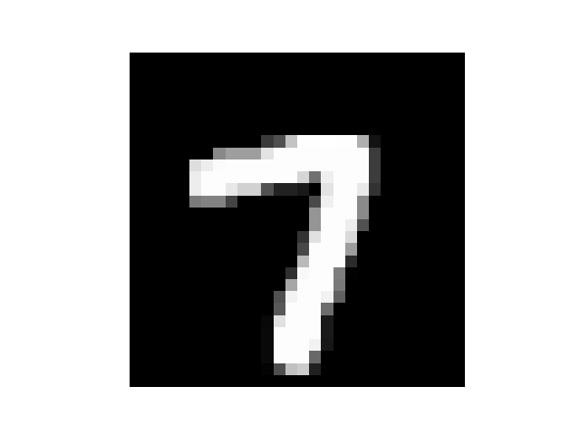</p> <div class="threejs-container" data-ply="https://emmanuel-hartman.github.io/Talks/plys/7_42750.ply"></div> </div> <div class="col-md-3" markdown="1" align="right"> <p>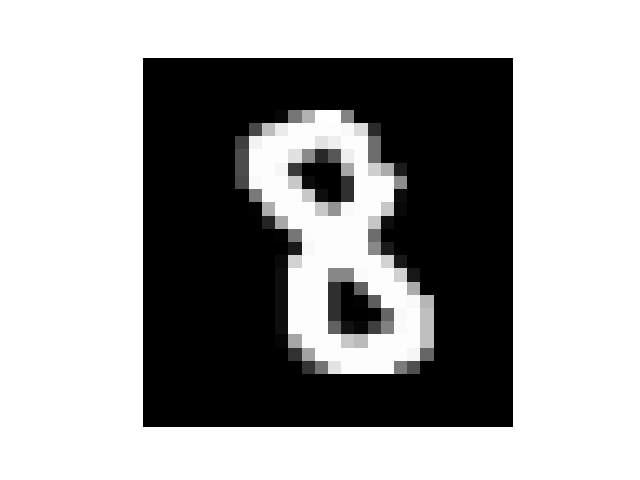</p> <div class="threejs-container" data-ply="https://emmanuel-hartman.github.io/Talks/plys/8_49830.ply"></div> </div> <p class="fragment fade-left">We train the model on ~80% of the MNIST digits and test the model on the remaining 20%. Despite having only 1850 trainable parameters our model attains an accuracy of 97.64% on the unseen data.</p> </div>
</p><div class="row"> <div class="col-md-8" markdown="1" align="left"> <p><sub> This talk is based on:<br><a href="https://diglib.eg.org/handle/10.2312/3dor20231150">https://diglib.eg.org/handle/10.2312/3dor20231150</a><br> <a href="https://arxiv.org/pdf/2411.03475">https://arxiv.org/pdf/2411.03475</a><br> A Pytorch implementation VariGrad model for shape graphs is available at:<br> <a href="https://github.com/emmanuel-hartman/Pytorch_VariGrad">https://github.com/emmanuel-hartman/Pytorch_VariGrad</a><br> The slides for this talk are available at: <a href="https://emmanuel-hartman.github.io/Talks/Slides/3-31-25VarifoldLearning/talk.html">https://emmanuel-hartman.github.io/Talks/Slides/3-31-25VarifoldLearning/talk.html.</a> </sub></p> </div> <div class="col-md-4" markdown="1" align="center"> <br><br> <center><p class="fragment fade-left">Thank you to the organizers for inviting me to speak and thank you for your attention!</p></center>